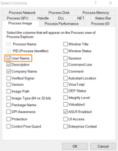
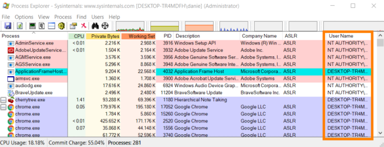
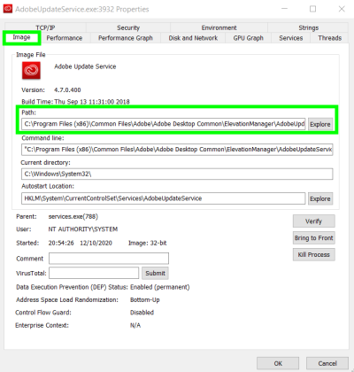
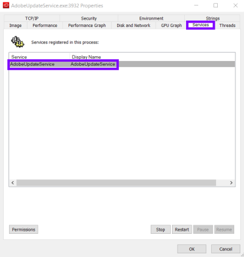

Process Explorer
Prerequisite
• On Windows 7 must be installed the update KB2533623(Download:
https://www.microsoft.com/download/details.aspx?familyid=c79c41b0-fbfb-4d61-b5d8-cadbe184b9fc)
Process Explorer
Site:
https://docs.microsoft.com/en-us/sysinternals/downloads/process-explorerProcess
Explorer is a tool from SysInternal Suite of Microsoft
We need it to find the
name of the service of the Process that we want to
investigate
Add the column Username that is useful for usRight click on the last
blank column → Select Columns → check box “User Name”
We
are targeting(searching) a third party application process that is running as NT AUTHORITY\SYSTEM, and that load a
DLL at startup badly(with some issues)
Example: Adobe Update
ServiceProcess Explorer → Right click on the process → Proprieties
